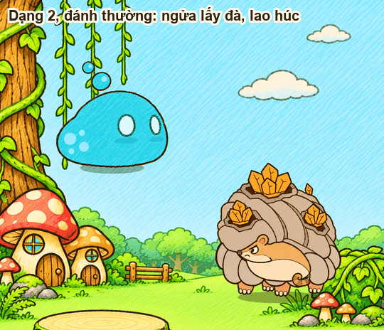
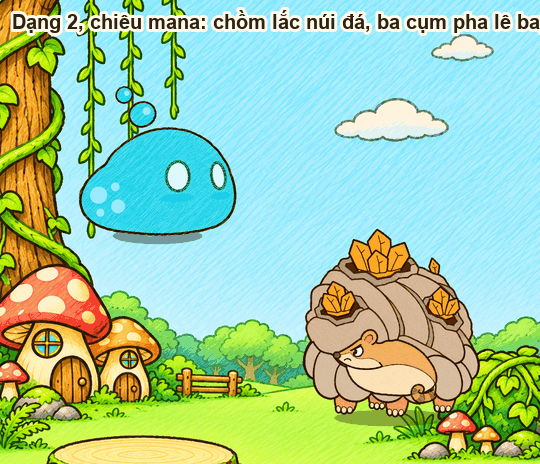
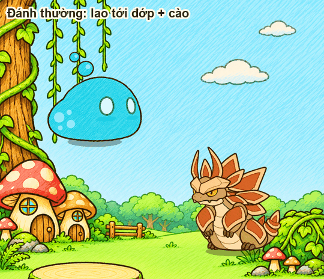
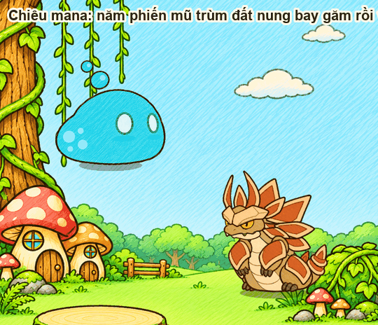
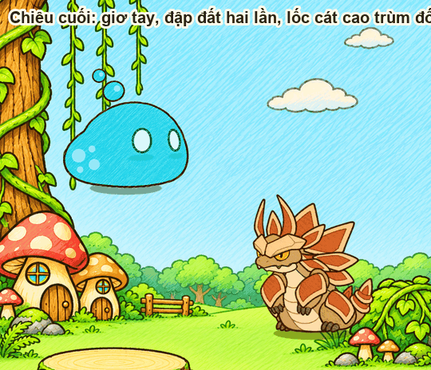
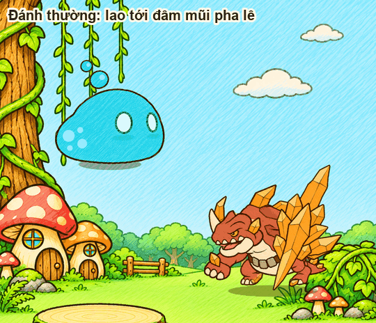
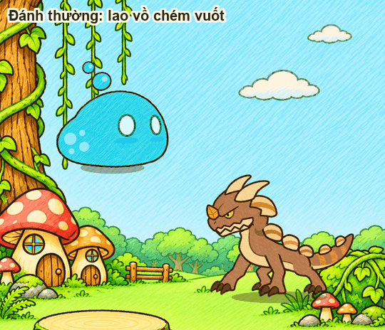
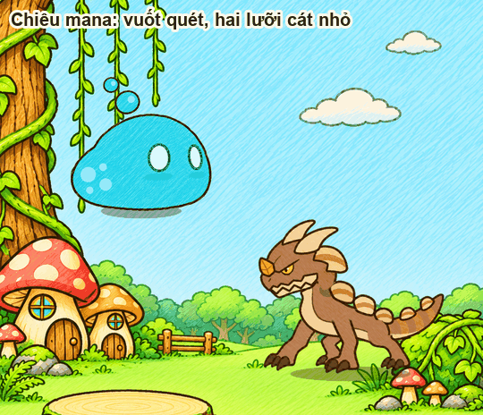
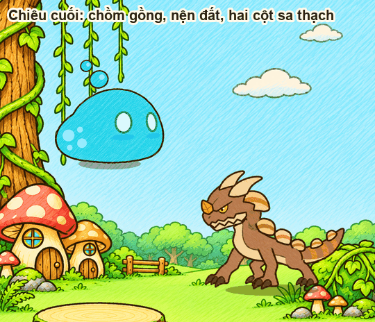

Mỗi con: bấm xem từng clip để mở trình xem (8 clip: appear, idle, walk, attack, cast, skill, hit, die). GIF bên dưới là chiêu kèm hiệu ứng bản xem trước (trong game hiệu ứng do code vẽ lại theo bản này).
rig 3528: tatu cõng núi đá, chân ngắn váy đá; mana bay 3 cụm pha lê hổ phách (thay sỏi); chiêu cuối mưa pha lê xem từng clip →


rig 3530: thằn lằn giáp phiến đất nung ngồi xổm thẳng lưng; mana 5 phiến mũ trùm bay găm rồi về lắp; chiêu cuối đập đất 2 lần, lốc cát xem từng clip →





rig 3526: cóc tê giác đất nung vác khối pha lê hổ phách; đánh thường đâm mũi pha lê; mana há hàm phun đá; chiêu cuối giơ khối gồng, nhảy tới bổ xuống xem từng clip →



rig 3529: rồng non sa thạch; đánh thường vồ chém; mana quét vuốt hai lưỡi cát; chiêu cuối chồm gồng, nện đất, hai cột sa thạch xem từng clip →


